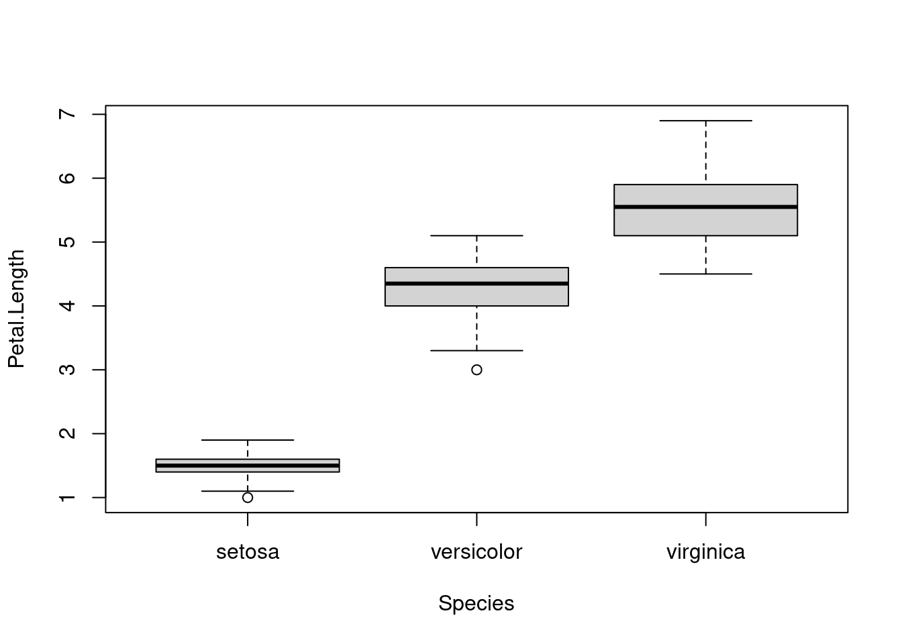
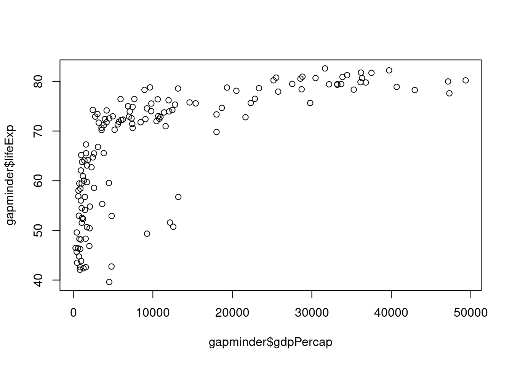
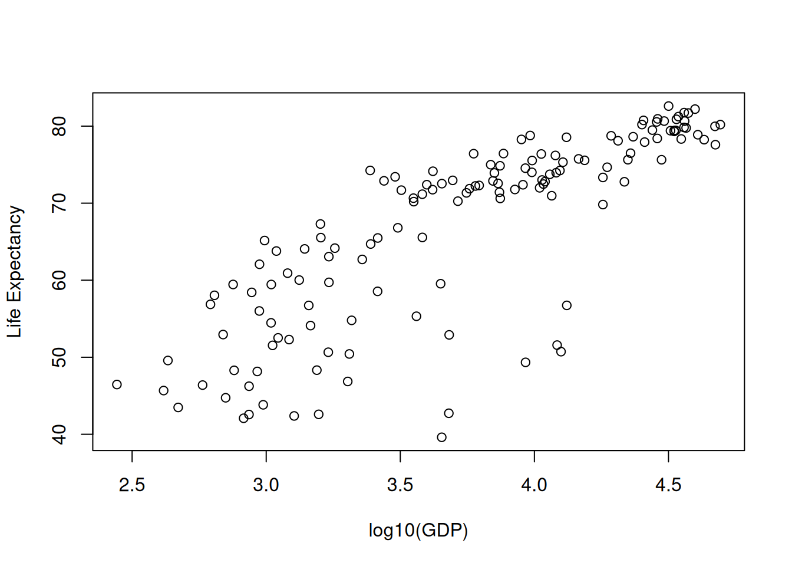

dir.create(path = "data")
dir.create(path = "output")Introduction to R Statistics
An introduction to using the R statistics package and the RStudio interface.
Learning objectives
- Read data from files and output results to files
- Extract relevant portions of datasets
- Run standard statistical tests in R, including Student’s t, analysis of variance (ANOVA), and simple linear regression.
Statistics in R
R was designed for statistical analyses. This lesson provides an overview of reading data and writing output, as well as running standard statistical tests in R, including t-tests, linear regression, and analysis of variance.
Setup
First we need to setup our development environment. Open RStudio and create a new project via:
- File > New Project…
- Select ‘New Directory’
- For the Project Type select ‘New Project’
- For Directory name, call it something like “r-graphing” (without the quotes)
- For the subdirectory, select somewhere you will remember (like “My Documents” or “Desktop”)
We need to create two folders: ‘data’ will store the data we will be analyzing, and ‘output’ will store the results of our analyses.
Data interrogation
For our first set of analyses, we’ll use a dataset that comes pre-loaded in R. The iris data were collected by botanist Edgar Anderson and used in the early statistical work of R.A. Fisher. Start by looking at the data with the head command:
head(x = iris) Sepal.Length Sepal.Width Petal.Length Petal.Width Species
1 5.1 3.5 1.4 0.2 setosa
2 4.9 3.0 1.4 0.2 setosa
3 4.7 3.2 1.3 0.2 setosa
4 4.6 3.1 1.5 0.2 setosa
5 5.0 3.6 1.4 0.2 setosa
6 5.4 3.9 1.7 0.4 setosairis is a data.frame, which is probably the most commonly used data structure in R. It is basically a table where each column is a variable and each row has one set of values for each of those variables (much like a single sheet in a program like LibreOffice Calc or Microsoft Excel). In the iris data, there are five columns: Sepal.Length, Sepal.Width, Petal.Length, Petal.Width, and Species. Each row corresponds to the measurements for an individual flower. Note that all the values in a column of a data.frame must be of the same type - if you try to mix numbers and words in the same column, R will “coerce” the data to a single type, which may cause problems for downstream analyses.
An investigation of our call to the head command illustrates two fundamental concepts in R: variables and functions.
head(x = iris)irisis a variable. That is, it is a name we use to refer to some information in our computer’s memory. In this case, the information is a table of flower measurements.headis the name of the function that prints out the first six rows of adata.frame. Most functions require some form of input; in this example, we provided one piece of input tohead: the name of the variable for which we want the first six lines.
Another great idea when investigating data is to plot it out to see if there are any odd values. Here we use boxplot to show the data for each species.
boxplot(formula = Petal.Length ~ Species, data = iris)
boxplot uses the syntax y ~ group, where the reference to the left of the tilde (~) is the value to plot on the y-axis (here we are plotting the values of Petal.Length) and the reference to the right indicates how to group the data (here we group by the value in the Species column of iris). Find out more about the plot by typing ?boxplot into the console.
Also note that R is case sensitive, so if we refer to objects without using the correct case, we will often encounter errors. For example, if I forgot to capitalize Species in the boxplot call, R cannot find species (note the lower-case “s”) and throws an error:
boxplot(formula = Petal.Length ~ species, data = iris)Error in eval(predvars, data, env): object 'species' not foundTo keep track of what we do, we will switch from running commands directly in the console to writing R scripts that we can execute. These scripts are simple text files with R commands.
Student’s t
We are going to start by doing a single comparison, looking at the petal lengths of two species. We use a t-test to ask whether or not the values for two species were likely drawn from two separate populations. Just looking at the data for two species of irises, it looks like the petal lengths are different, but are they significantly different?
| I. setosa | I. versicolor |
|---|---|
| 1.4 | 4.7 |
| 1.4 | 4.5 |
| 1.3 | 4.9 |
| 1.5 | 4.0 |
| 1.4 | 4.6 |
| … | … |
Start by making a new R script file (File > New File > R Script) and save it as “iris-t-test.R”. We start by adding some key information to the top of the script, using the comment character, #, so R will know to ignore these lines. Commenting your code is critical in understanding why and how you did analyses when you return to the code two years from now.
# T-test on iris petal lengths
# Jeff Oliver
# jcoliver@email.arizona.edu
# 2016-09-09
# Compare setosa and versicolorWe’ll start by comparing the data of Iris setosa and Iris versicolor, so we need to create two new data objects, one corresponding to the I. setosa data and one for the I. versicolor data.
setosa <- iris[iris$Species == "setosa", ]
versicolor <- iris[iris$Species == "versicolor", ]OK, a lot happened with those two lines. Let’s take a look:
irisis thedata.framewe worked with before.iris$Speciesrefers to one column iniris, that is, the column with the name of the species (setosa, versicolor, or virginica).- The square brackets
[<position 1>, <position 2>]are used to indicate a subset of theirisdata. Adata.frameis effectively a two-dimensional structure - it has some number of rows (the first dimension) and some number of columns (the second dimension). We can see how many rows and columns are in adata.framewith thedimcommand.dim(iris)prints out the number of rows (150) and the number of columns (5):
dim(iris)[1] 150 5We use the square brackets to essentially give an address for the data we are interested in. We tell R which rows we want in the first position and which columns we want in the second position. If a dimension is left blank, then all rows/columns are returned. For example, this returns all columns for the third row of data in iris:
iris[3, ] Sepal.Length Sepal.Width Petal.Length Petal.Width Species
3 4.7 3.2 1.3 0.2 setosaSo the code
setosa <- iris[iris$Species == "setosa", ]will extract all columns (because there is nothing after the comma) in the iris data for those rows where the value in the Species column is “setosa” and assign that information to a variable called setosa.
Comparing the iris data and the setosa data, we see that there are indeed fewer rows in the setosa data:
nrow(iris)[1] 150nrow(setosa)[1] 50Now to compare the two species, we call the t.test function in R, passing each set of data to x and y.
# Compare Petal.Length of these two species
t.test(x = setosa$Petal.Length, y = versicolor$Petal.Length)
Welch Two Sample t-test
data: setosa$Petal.Length and versicolor$Petal.Length
t = -39.493, df = 62.14, p-value < 2.2e-16
alternative hypothesis: true difference in means is not equal to 0
95 percent confidence interval:
-2.939618 -2.656382
sample estimates:
mean of x mean of y
1.462 4.260 The output of a t-test is a little different than what we will see later in the ANOVA. The results include:
- Test statistic, degrees of freedom, and p-value
- The confidence interval for the difference in means between the two data sets
- The means of each data set
So we reject the hypothesis that these species have the same petal lengths.
The final script should be:
# T-test on iris petal lengths
# Jeff Oliver
# jcoliver@email.arizona.edu
# 2016-09-09
# Compare setosa and versicolor
# Subset data
setosa <- iris[iris$Species == "setosa", ]
versicolor <- iris[iris$Species == "versicolor", ]
# Run t-test
t.test(x = setosa$Petal.Length, y = versicolor$Petal.Length)Challenge 1
Test for significant differences in petal lengths between I. setosa and I. virginica and between I. versicolor and I. virginica.
(Solution)
Analysis of Variance (ANOVA)
ANOVA allows us to simultaneously compare multiple groups, to test whether group membership has a significant effect on a variable of interest. Create a new script file called ‘iris-anova.R’ and the header information.
# ANOVA on iris data set
# Jeff Oliver
# jcoliver@email.arizona.edu
# 2016-09-09The question we will address is: are there differences in petal length among the three species? We start by building an analysis of variance model with the aov function:
aov(formula = Petal.Length ~ Species, data = iris)Call:
aov(formula = Petal.Length ~ Species, data = iris)
Terms:
Species Residuals
Sum of Squares 437.1028 27.2226
Deg. of Freedom 2 147
Residual standard error: 0.4303345
Estimated effects may be unbalancedIn this case, we pass two arguments to the aov function:
- For the
formulaparameter, we passPetal.Length ~ Species. This format is used throughout R for describing relationships we are testing. The format isy ~ x, where the response variables (e.g.y) are to the left of the tilde (~) and the predictor variables (e.g.x) are to the right of the tilde. In this example, we are asking if petal length is significantly different among the three species. - We also need to tell R where to find the
Petal.LengthandSpeciesdata, so we pass the variable name of theiris data.frameto thedataparameter.
But we want to store the model, not just print it to the screen, so we use the assignment operator <- to store the product of the aov function in a variable of our choice:
petal_length_aov <- aov(formula = Petal.Length ~ Species, data = iris)Notice how when we execute this command, nothing printed in the console. This is because we instead sent the output of the aov call to a variable. If you just type the variable name,
petal_length_aovyou will see the familiar output from the aov function:
Call:
aov(formula = Petal.Length ~ Species, data = iris)
Terms:
Species Residuals
Sum of Squares 437.1028 27.2226
Deg. of Freedom 2 147
Residual standard error: 0.4303345
Estimated effects may be unbalancedTo see the results of the ANOVA, we call the summary function:
summary(object = petal_length_aov) Df Sum Sq Mean Sq F value Pr(>F)
Species 2 437.1 218.55 1180 <2e-16 ***
Residuals 147 27.2 0.19
---
Signif. codes: 0 '***' 0.001 '**' 0.01 '*' 0.05 '.' 0.1 ' ' 1The species do have significantly different petal lengths (P < 0.001). If one wanted to run a post hoc test to assess how the species are different, a Tukey test comparing means would likely be the most appropriate option. A link to an example of how to do this is in the Additional resources section at the end of this lesson.
If we want to save these results to a file, we put the call to summary between a pair of calls to sink:
sink(file = "output/petal-length-anova.txt")
summary(object = petal_length_aov)
sink()Our script should look like this:
# ANOVA on iris data set
# Jeff Oliver
# jcoliver@email.arizona.edu
# 2016-09-09
# Run ANOVA on petal length
petal_length_aov <- aov(formula = Petal.Length ~ Species, data = iris)
# Save results to file
sink(file = "output/petal-length-anova.txt")
summary(object = petal_length_aov)
sink()Challenge 2
Use ANOVA to test for differences in sepal width among the three species. What is the value of the F-statistic?
(Solution)
Linear regression
For this final section, we will test for a relationship between life expectancy and per capita gross domestic product (GDP). Start by downloading the data from https://tinyurl.com/gapminder-five-year-csv (right-click or Ctrl-click on link and Save As…). Save this to the ‘data’ directory you created in the Setup section. Now create another R script and call it gapminder-reg.R. The file has comma-separated values for 142 countries at twelve different years; the data can be loaded in R with the read.csv function:
# Test relationship between life expectancy and GDP
# Jeff Oliver
# jcoliver@email.arizona.edu
# 2016-07-29
all_gapminder <- read.csv(file = "data/gapminder-FiveYearData.csv",
stringsAsFactors = TRUE)This reads the file into memory and stores the data in a data frame called all_gapminder.
Recall you can see the first few rows with the head function.
head(all_gapminder) country year pop continent lifeExp gdpPercap
1 Afghanistan 1952 8425333 Asia 28.801 779.4453
2 Afghanistan 1957 9240934 Asia 30.332 820.8530
3 Afghanistan 1962 10267083 Asia 31.997 853.1007
4 Afghanistan 1967 11537966 Asia 34.020 836.1971
5 Afghanistan 1972 13079460 Asia 36.088 739.9811
6 Afghanistan 1977 14880372 Asia 38.438 786.1134Another useful quality assurance tool is summary, which provides a basic description for each column in the data frame.
summary(all_gapminder) country year pop continent
Afghanistan: 12 Min. :1952 Min. :6.001e+04 Africa :624
Albania : 12 1st Qu.:1966 1st Qu.:2.794e+06 Americas:300
Algeria : 12 Median :1980 Median :7.024e+06 Asia :396
Angola : 12 Mean :1980 Mean :2.960e+07 Europe :360
Argentina : 12 3rd Qu.:1993 3rd Qu.:1.959e+07 Oceania : 24
Australia : 12 Max. :2007 Max. :1.319e+09
(Other) :1632
lifeExp gdpPercap
Min. :23.60 Min. : 241.2
1st Qu.:48.20 1st Qu.: 1202.1
Median :60.71 Median : 3531.8
Mean :59.47 Mean : 7215.3
3rd Qu.:70.85 3rd Qu.: 9325.5
Max. :82.60 Max. :113523.1
For the four numeric columns (year, pop, lifeExp, and gdpPercap), some descriptive statistics are shown. For the country and continent columns the first few values and frequencies of each value are shown (i.e. there are 12 records for Afghanistan and 624 records for Africa).
For this analysis, we only want the data from 2007, so we start by subsetting those data. This creates a new variable and stores only those rows in the original data frame where the value in the year column is 2007.
# Subset 2007 data
gapminder <- all_gapminder[all_gapminder$year == 2007, ]As we did for the ANOVA analyses, it is usually a good idea to visually inspect the data when possible. Here we can use the plot function to create a scatterplot of the two columns of interest, lifeExp and gdpPercap.
# Plot to look at data
plot(x = gapminder$gdpPercap, y = gapminder$lifeExp)
We can see immediately that this is unlikely a linear relationship. For our purposes, we will need to log-transform the GDP data. Create a new column in the gapminder data frame with the log10-transformed GDP and plot this transformed data.
# Create log-transformed GDP
gapminder$logGDP <- log10(gapminder$gdpPercap)
# Plot again, with log-transformed GDP on the x-axis
plot(x = gapminder$logGDP,
y = gapminder$lifeExp,
xlab = "log10(GDP)",
ylab = "Life Expectancy")
Notice also that we passed two additional arguments to the plot command: xlab and ylab. These are used to label the x- and y-axis, respectively (try the plot function without passing xlab and ylab arguments to see what happens without them).
Now that the data are properly transformed, we can create the linear model for the predictability of life expectancy based on gross domestic product.
# Run a linear model
lifeExp_v_gdp <- lm(formula = lifeExp ~ logGDP, data = gapminder)
# Investigate results of the model
summary(lifeExp_v_gdp)
Call:
lm(formula = lifeExp ~ logGDP, data = gapminder)
Residuals:
Min 1Q Median 3Q Max
-25.947 -2.661 1.215 4.469 13.115
Coefficients:
Estimate Std. Error t value Pr(>|t|)
(Intercept) 4.950 3.858 1.283 0.202
logGDP 16.585 1.019 16.283 <2e-16 ***
---
Signif. codes: 0 '***' 0.001 '**' 0.01 '*' 0.05 '.' 0.1 ' ' 1
Residual standard error: 7.122 on 140 degrees of freedom
Multiple R-squared: 0.6544, Adjusted R-squared: 0.652
F-statistic: 265.2 on 1 and 140 DF, p-value: < 2.2e-16For our question, the relationship between life expectancy and GDP, focus on the coefficients section, specifically the line for logGDP:
## logGDP 16.585 1.019 16.283 < 2e-16 ***
First of all, there is a significant relationship between these two variables (p < 2 x 10-16, or, as R reports in the Pr>(|t|) column, p < 2e-16). The Estimate column of the results lists a value of 16.585, which means that for every 10-fold increase in per capita GDP (remember we log10-transformed GDP), life expectancy increases by almost 17 years.
As before, if we want to instead save the results to a file instead of printing them to the screen, we use the sink function.
sink(file = "output/lifeExp-gdp-regression.txt")
summary(lifeExp_v_gdp)
sink()The final script should be:
# Test relationship between life expectancy and GDP
# Jeff Oliver
# jcoliver@email.arizona.edu
# 2016-07-29
# Read data from comma-separated values file
all_gapminder <- read.csv(file = "data/gapminder-FiveYearData.csv",
stringsAsFactors = TRUE)
# Subset 2007 data
gapminder <- all_gapminder[all_gapminder$year == 2007, ]
# Plot to look at data
plot(x = gapminder$gdpPercap, y = gapminder$lifeExp)
# Create log-transformed GDP
gapminder$logGDP <- log10(gapminder$gdpPercap)
# Plot new variable
plot(x = gapminder$logGDP,
y = gapminder$lifeExp,
xlab = "log10(GDP)",
ylab = "Life Expectancy")
# Run linear model
lifeExp_v_gdp <- lm(formula = lifeExp ~ logGDP, data = gapminder)
# Save results to file
sink(file = "output/lifeExp-gdp-regression.txt")
summary(lifeExp_v_gdp)
sink()Challenge 3
Test for a relationship between life expectancy and log base 2 of GDP for the 1982 data. How does life expectancy change with a four-fold increase in GDP?
(Solution)
Solutions to Challenges
Solution to Challenge 1
Test for significant differences in petal lengths between I. setosa and I. virginica and between I. versicolor and I. virginica.
First comparison: I. setosa vs. I. virginica
# Subset setosa data
setosa <- iris[iris$Species == "setosa", ]
# Subset virginica data
virginica <- iris[iris$Species == "virginica", ]
# Run t-test
t.test(x = setosa$Petal.Length, y = virginica$Petal.Length)
Welch Two Sample t-test
data: setosa$Petal.Length and virginica$Petal.Length
t = -49.986, df = 58.609, p-value < 2.2e-16
alternative hypothesis: true difference in means is not equal to 0
95 percent confidence interval:
-4.253749 -3.926251
sample estimates:
mean of x mean of y
1.462 5.552 I. setosa and I. virginica have significantly different petal lengths.
Second comparison: I. versicolor and I. virginica
# Subset versicolor data
versicolor <- iris[iris$Species == "versicolor", ]
# Subset virginica data
virginica <- iris[iris$Species == "virginica", ]
# Run t-test
t.test(x = versicolor$Petal.Length, y = virginica$Petal.Length)
Welch Two Sample t-test
data: versicolor$Petal.Length and virginica$Petal.Length
t = -12.604, df = 95.57, p-value < 2.2e-16
alternative hypothesis: true difference in means is not equal to 0
95 percent confidence interval:
-1.49549 -1.08851
sample estimates:
mean of x mean of y
4.260 5.552 I. versicolor and I. virginica also have different significantly different petal lengths.
Solution to Challenge 2
Use ANOVA to test for differences in sepal width among the three species. What is the value of the F-statistic?
sepal_width_aov <- aov(formula = Sepal.Width ~ Species, data = iris)
summary(object = sepal_width_aov) Df Sum Sq Mean Sq F value Pr(>F)
Species 2 11.35 5.672 49.16 <2e-16 ***
Residuals 147 16.96 0.115
---
Signif. codes: 0 '***' 0.001 '**' 0.01 '*' 0.05 '.' 0.1 ' ' 1The F-statistic = 49.16, and the p-value is quite small, so there are significant sepal width differences among species.
Solution to Challenge 3
Test for a relationship between life expectancy and log base 2 of GDP for the 1982 data. How does life expectancy change with a four-fold increase in GDP?
# Read data from comma-separated values file
gapminder <- read.csv(file = "data/gapminder-FiveYearData.csv",
stringsAsFactors = TRUE)
# Subset 1982 data
gapminder_1982 <- gapminder[gapminder$year == 1982, ]
# Create log2-transformed GDP
gapminder_1982$log2GDP <- log2(gapminder_1982$gdpPercap)
# Run linear model
lifeExp_v_gdp <- lm(lifeExp ~ log2GDP, data = gapminder_1982)
summary(lifeExp_v_gdp)
Call:
lm(formula = lifeExp ~ log2GDP, data = gapminder_1982)
Residuals:
Min 1Q Median 3Q Max
-18.7709 -2.8743 0.4812 3.6039 14.6986
Coefficients:
Estimate Std. Error t value Pr(>|t|)
(Intercept) -0.6505 3.3463 -0.194 0.846
log2GDP 5.1942 0.2766 18.780 <2e-16 ***
---
Signif. codes: 0 '***' 0.001 '**' 0.01 '*' 0.05 '.' 0.1 ' ' 1
Residual standard error: 5.762 on 140 degrees of freedom
Multiple R-squared: 0.7158, Adjusted R-squared: 0.7138
F-statistic: 352.7 on 1 and 140 DF, p-value: < 2.2e-16The line to focus on is the log2GPD line in the coefficients section:
## log2GDP 5.1942 0.2766 18.780 <2e-16 ***
The coefficient for log2 GDP in the model is positive, with increases in GDP correlating with increased life expectancy. The estimated coefficient for the relationship is 5.19. Remember that we log2-tranformed the GDP data, so this coefficient indicates the change in life expectancy for every two-fold increase in per capita GDP. For a four-fold increase in GDP, we multiply this coefficient by two (because four is two two-fold changes) to conclude that a four-fold increase in GDP results in an increase of 10.39 years in life expectancy.
Additional resources
- Early work by R.A. Fisher: doi: 10.1111%2Fj.1469-1809.1936.tb02137.x
- A PDF version of this lesson
- An Example of Tukey’s test for post hoc pairwise comparisons from ANOVA results.